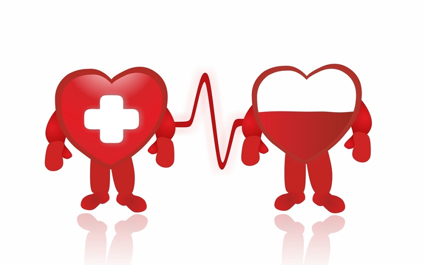

<div class="card text-bg-dark animated zoomIn fast">
    
    <div class="card-img-overlay text-dark fw-bold">
        <h5 class="card-title text-primary fw-bold"> Razones para donar</h5>
        <div class="d-grid gap-2 d-md-flex justify-content-md-end">
            <button class="btn btn-outline-danger " routerLink="../inicio">Volver</button>
            <button class="btn btn-outline-primary " routerLink="../citas">Ir a Citas</button>

        </div>
        <hr>
        <p class="text-dark fw-bold">
            La iniciativa parte de ti, pero, por si tienes alguna duda, aquí te presentamos razones que pueden ayudarte a dar este pequeño paso solidario:
        </p>
        <ul>
            <li>La sangre no puede fabricarse</li>
            <li>Con una donación pueden salvarse tres vidas</li>
            <li>La cantidad donada sólo representa el 10% de la sangre que normalmente se posee, porcentaje que no interfiere con el funcionamiento</li>
            <li>Cada día 75 personas salvan su vida en España gracias a las transfusiones</li>
            <li>Los tratamientos de cáncer, la cirugía compleja, los accidentes de tráfico, los trasplantes de órganos... serían imposibles sin donaciones de sangre</li>
            <li>Si piensas donar cuando haya una emergencia, ya llegas tarde. Tu sangre debe ser sometida a pruebas y procesos. Es mejor acudir antes de que aparezca la necesidad</li>
            <li>Mañana le puede hacer falta a uno de los tuyos</li>
            <li> Si eres 0-, tu sangre es de gran importancia por sus especiales características inmunológicas</li>
            <li>Etc...</li>
        </ul>


        <hr>

        <h5 class="card-title text-primary fw-bold">¿Puedo donar sangre?
        </h5>
        <hr>
        <p class="text-dark fw-bold">En principio, puedes ser donante de sangre si tienes entre 18 y 65 años, pesas más de 50 kilos y gozas, en general, de buena salud. Ten en cuenta que:</p>
        <ul>
            <li>Es preciso tener el peso mínimo indicado porque en cada donación se recoge una cantidad estándar para todos los donantes (450 ml)</li>
            <li>Las mujeres pueden donar hasta 3 veces al año, y los hombres, 4</li>
            <li>Entre cada donación de sangre deben transcurrir al menos dos meses</li>
            <li>No es preciso estar en ayunas para hacer una donación de sangre; incluso habiendo hecho una comida normal se puede donar sin problemas</li>
            <li>Puedes donar sangre aunque tengas el colesterol elevado o tomes algunos medicamentos frecuentes</li>
            <li>No puedes hacerlo si padeces anemia o realizas prácticas de riesgo que faciliten el contagio de enfermedades</li>
        </ul>


    </div>

</div>
